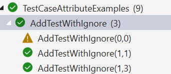
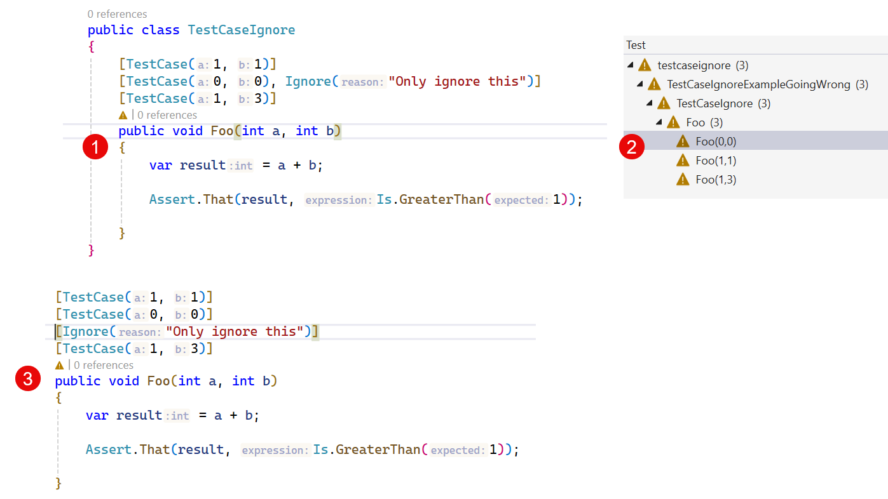

TestCase
TestCaseAttribute serves the dual purpose of marking a method with parameters as a test method and providing inline
data to be used when invoking that method. Here is an example of a test being run three times, with three different sets
of data:
[TestCase(12, 3, 4)]
[TestCase(12, 2, 6)]
[TestCase(12, 4, 3)]
public void DivideTest(int n, int d, int q)
{
Assert.That(n / d, Is.EqualTo(q));
}
Note
Because arguments to .NET attributes are limited in terms of the Types that may be used, NUnit will make some
attempt to convert the supplied values using Convert.ChangeType() before supplying it to the test.
TestCaseAttribute may appear one or more times on a test method, which may also carry other attributes providing test data. The method may optionally be marked with the Test Attribute as well.
By using the named parameter ExpectedResult this test set may be simplified further:
[TestCase(12, 3, ExpectedResult = 4)]
[TestCase(12, 2, ExpectedResult = 6)]
[TestCase(12, 4, ExpectedResult = 3)]
public int DivideTest(int n, int d)
{
return n / d;
}
In the above example, NUnit checks that the return value of the method is equal to the expected result provided on the attribute.
TestCaseAttribute supports a number of additional named parameters:
- Author sets the author of the test.
- Category provides a comma-delimited list of categories for this test.
- Description sets the description property of the test.
- ExcludePlatform specifies a comma-delimited list of platforms on which the test should not run.
- ExpectedResult sets the expected result to be returned from the method, which must have a compatible return type.
- Explicit is set to true in order to make the individual test case Explicit. Use Reason to explain why.
- Ignore causes the test case to be ignored and specifies the reason.
- IgnoreReason causes this test case to be ignored and specifies the reason.
- IncludePlatform specifies a comma-delimited list of platforms on which the test should run.
- Reason specifies the reason for not running this test case. Use in conjunction with Explicit.
- TestName provides a name for the test. If not specified, a name is generated based on the method name and the arguments provided. See Template Based Test Naming.
- TestOf specifies the Type that this test is testing (this is not used within NUnit during test execution, but may serve a purpose for the test author)
- TypeArgs specifies the
Types to be used when targeting a generic test method. (NUnit 4.1+)
Be aware of mixing the syntax for named parameters and attributes with the same name
Correct Ignore Attribute Usage, by Example
Warning
When using the Ignore parameter (and others, see below), note that this has to be a named parameter. It is easy to accidentally add another Ignore attribute after the TestCase attribute. That will be the same as adding it separately, and it will apply to the complete fixture. This may apply to other named parameters, with names equal to other attributes, like the Explicit and Category parameters.
Correct example usage:
[TestCase(1, 1)]
[TestCase(0, 0, Ignore = "Only ignore this")]
[TestCase(1, 3)]
public void AddTestWithIgnore(int a, int b)
{
var result = a + b;
Assert.That(result, Is.GreaterThan(1));
}

Warning
Wrong way! Below, we demonstrate an incorrect approach.
(1) Adding it on the same line is the same as adding it on a separate line (3), both results in the fixture being ignored (2).

Thanks to Geir Marius Gjul for raising this question again.
Correct Explicit Attribute Usage, by Example
Explicit, used correctly, looks like the following:
[TestCase(1, 1)]
[TestCase(0, 0, Explicit = true, Reason = "This will fail so only run explicitly")]
[TestCase(1, 3)]
public void AddTestWithExplicit(int a, int b)
{
var result = a + b;
Assert.That(result, Is.GreaterThan(1));
}
Note that adding the Reason is optional, and Visual Studio TestExplorer will not even show it.
Correct Category Attribute Usage, by Example
Categories can be applied to a single TestCase the same way, as a named parameter. Otherwise, it will apply to the whole fixture. Be sure what you're asking for!
[TestCase(1, 1)]
[TestCase(2, 0, Category = "Crazy")]
[TestCase(1, 3)]
public void AddTestWithCategory(int a, int b)
{
var result = a + b;
Assert.That(result, Is.GreaterThan(1));
}
Order of Execution
Individual test cases are executed in the order in which NUnit discovers them. This order does not necessarily follow the lexical order of the attributes and will often vary between different compilers or different versions of the CLR.
As a result, when TestCaseAttribute appears multiple times on a method or when other data-providing attributes are used in combination with TestCaseAttribute, the order of the test cases is undefined.
Generic TestCase Attributes
NUnit provides generic versions of TestCaseAttribute that offer compile-time type safety for test arguments. These are
available as TestCaseAttribute<T> through TestCaseAttribute<T1, T2, T3, T4, T5>, supporting up to 5 type parameters.
Note
From NUnit 4.6 Generic TestCase attributes are only available on .NET 6.0 and later. They are not supported on .NET Framework.
Single Type Parameter
// Testing with a single generic type parameter
// The compiler ensures the argument matches the type
[TestCase<int>(42)]
[TestCase<int>(0)]
[TestCase<int>(-1)]
public void TestDefaultComparison<T>(T value)
{
Assert.That(value, Is.InstanceOf<T>());
}
Multiple Type Parameters
// Testing with two generic type parameters
[TestCase<int, double>(42, 42.0)]
[TestCase<string, int>("hello", 5)]
public void TestPairTypes<T1, T2>(T1 first, T2 second)
{
Assert.That(first, Is.InstanceOf<T1>());
Assert.That(second, Is.InstanceOf<T2>());
}
With Expected Result
Generic TestCase attributes support all the same named parameters as the regular TestCaseAttribute:
// Using ExpectedResult with generic TestCase
[TestCase<int>(5, ExpectedResult = 10)]
[TestCase<int>(0, ExpectedResult = 0)]
[TestCase<int>(-3, ExpectedResult = -6)]
public int DoubleValue<T>(T value) where T : IConvertible
{
return Convert.ToInt32(value) * 2;
}
Mixing Generic and Regular TestCase
You can mix generic and regular TestCase attributes on the same method:
// You can mix regular and generic TestCase attributes
[TestCase(1, 2)] // Types inferred
[TestCase<int, int>(3, 4)] // Types explicit - same as above
[TestCase<double, double>(1.5, 2.5)] // Different types
public void MixedTestCases<T1, T2>(T1 a, T2 b)
{
Assert.That(a, Is.InstanceOf<T1>());
Assert.That(b, Is.InstanceOf<T2>());
}
Benefits of Generic TestCase
- Compile-time type checking: Errors are caught at compile time rather than runtime
- Better IDE support: IntelliSense provides accurate parameter types
- Clearer intent: The expected types are explicit in the attribute declaration
- Refactoring safety: Type changes are caught by the compiler
Comparison with TypeArgs
The TypeArgs named parameter provides similar functionality but is specified at runtime:
// Using TypeArgs (runtime type specification)
[TestCase(42, TypeArgs = new[] { typeof(int) })]
public void TestWithTypeArgs<T>(T value) { }
// Using generic attribute (compile-time type specification)
[TestCase<int>(42)]
public void TestWithGenericAttribute<T>(T value) { }
Both approaches are valid; choose based on your needs:
- Use generic attributes when you want compile-time type safety
- Use TypeArgs when you need to specify types dynamically or when targeting .NET Framework